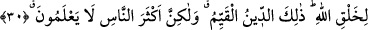
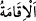
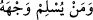
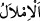

üzerine de deniz suyu döktü. Bana: “Ye bunu.” dedi. Bir de baktım ki o, çok şekerli bir
sevik (püre) olmuş. Bunun üzerine genç: “Hâli böyle olan bir kimse senin dirhemlerine
ihtiyaç duyar mı?!” dedi ve şu şiiri söylemeye başladı:
Sevilenin hakkı için ey dostlarım anlamaya çalışın
Bir varlığın lisanı (gerçek) varlığa yabancıdır
Aşk ve muhabbete girişen bir kalbe haramdır
Onda Hak’tan gayrısının payı olması
Şu halde sâlike düşen, Allah’tan hevâ/sevgi ve aşk yoluna hidâyeti, doğruluk
koltuklarında zevk menziline ulaşmayı istemektir. Çünkü Allah Teâlâ’dan başka her şey
hevâ, vebâl, sûret ve hayaldir. Kim mânâyı istiyorsa, ona temelinden intikâl etsin.
30. (Rasûlüm!) Sen yüzünü hanîf olarak dîne, Allah insanları hangi fıtrat üzere
yaratmış ise ona çevir. Allâh’ın yaratışında değişme yoktur. İşte dosdoğru din
budur; fakat insanların çoğu bilmezler.
“(Rasûlüm!) Sen yüzünü hanîf olarak” yâni kendisine meylettiğin, üzerinde istikamet
üzere bulunup ondan başkasına dönmediğin halde “dine”çevir.
“
” Tâcü’l-masâdır’da geçtiği gibi düzeltmek, istikamet vermek, doğrultmak,
çevirmek demektir. “
” özel bir uzuvdur. Bâzen bu kelime ile “
yüzünü/kendini bütünüyle Allâh’a veren kimse” (Lokman, 31/22) âyetinde olduğu
gibi zât/bir şeyin kendisi ifâde edilir. “
” kelimesinin asıl anlamı tâat ve karşılıktır.
İstiâre yoluyla şerîat için kullanılmıştır. Din ve millet kelimesi arasındaki fark
îtibârî/farazîdir. Çünkü şerîat kendisine itâat edilmesi ve boyun eğilmesi bakımından
dindir. İmlâ edilip yazılması bakımından ise millettir. “
” imlâ mânâsınadır. İmlâ
ise bir kimsenin söylemesi, diğerinin de ondan yazmasıdır.
“Yüzü dîne çevirmek”, kişinin dîne yönelmesi, istikâmet üzere olması ve sebeplerini
düzene koyarak ona özen göstermesi anlamında bir temsildir. Çünkü gözle hissedilen bir
şeye önem atfeden gözünü ona diker, bakışını ona çevirir ve yüzünü dönerek ona
doğrultur.
Buna göre mânâ şöyledir: Mâdem ki müşriklerin durumu, hevâya uymak ve hidâyetten
yüz çevirmektir, öyleyse sen de ey Muhammed, yüzünü hak din olan İslâm’a çevir ve
sağa-sola çevirmeden ona doğrult.
el-Kâmûs’ta der ki: “Hanîf, İslâm’a meyli sahih ve onun üzerinde sâbit olan